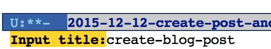
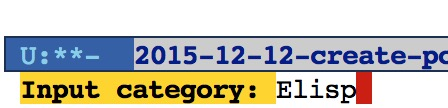
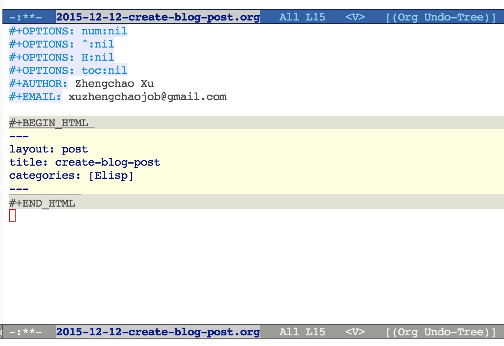

Elisp 大笔记
Table of Contents
Elisp的各种平时笔记, 琐碎, 自用
Elisp 基本数据结构
对Lisp而言, 所有不是cons cell的结构都成为atom.
Cons Cell
作为一门"面向list"编程的语言, List毫无疑问是lisp最核心 的数据结构, 但List并不是一个"基本数据结构", 它是在Cons Cell 这种类型的基础上建立的.
Cons Cell结构有两个"槽位"构成, 分别成为"CAR"槽位和"CDR"槽位. 每个槽位都可以放置任意的Lisp结构. 每个List都有一系列的Cons Cell"链接"而成. 所谓链接即List的每个cons cell, 其CDR槽位要么存放下一个cons cell, 要么 存放空list(即nil).
以List变量 l = >((pine needless) oak maple)为例来解释一下cons cell的概念, 对于这个list来说, 它的CAR槽位可以通过(car l)来获取, 即(pine needless), 可以看到该CAR槽位存放的对象仍然为一个list(称其为lcar), 该list同样有两个 槽位, 其CAR槽位为字符串pine.
List 的CDR槽位可以通过(cdr list)来获取, 以上面的l为例, 其CDR槽位为(oak maple), 同样为一个list对象(称其为lcdr). 对于lcdr, 其CDR槽位为(maple), 仍然为一个list (称其为llcdr), llcdr的CAR槽位为maple, CDR槽位为nil. 可以通过下图来展示上面的例子
-------------- -------------- --------------
| car | cdr | | car | cdr | | car | cdr |
| o | o------->| oak | o------->| maple | nil |
| | | | | | | | | |
-- | --------- -------------- --------------
|
|
| -------------- ----------------
| | car | cdr | | car | cdr |
------>| pine | o------->| needles | nil |
| | | | | |
-------------- ----------------
一个cons cell可以用下面的方式表示 (A . B). 这里该cons cell的CAR槽位为A, CDR槽位为B, 对于上面的list l, 其完整的表示为. 不过在lisp编码中一般 使用上面例子的形式, 除非需要明确指定CDR槽为一个既不为cons cell, 又不为nil的 对象.
((pine . (needless . nil)) . (oak . (maple . nil))))
数组
在Emacs Lisp, 数组是指一个固定长度的对象, 里面的每一个元素都占据 该数组的一个"槽位". Emacs中的数组可分为四种类型: Vector, String, Char-table, Bool-vector. 对这四种类型的操作可以使用通用的数组函数.
通用数组函数
| 原型 | 功能 |
|---|---|
| (arrayp x) | 如果x是数组返回t |
| (aref a index) | 返回第index个元素, 0开始 |
| (aset a index obj) | 将第index元素设为obj, 返回obj |
| (fillarray a obj) | 全部设为obj |
向量(Vector)
在Emacs lisp中,向量通过中括号表示, 里面包含任意类型的对象. 例如 [1 "two" (three)]. 下表是vector特有的函数:
| 原型 | 功能 |
|---|---|
| (vectorp v) | 检查是否为vector |
| (vector ..) | 生成vector |
| (make-vector N obj | 生成N个obj的vector |
| (vconcat x y z …) | 将所有参数的元素组合成一个vector |
Elisp 文本处理函数
Emacs Lisp提供了一个文本的框架, 通过该框架可以实现对buffer内容的 各种处理: 移动光标, 插入文本, 删除文本, 保存等等. 本文就简单介绍这些基础的函数.
光标位置函数
(point)
该函数返回一个整数, 表示当前光标的位置, buffer中的第一个char的位置 为1. 每一行的换行也算一个字符
(region-beginning) (region-end)
当前区块的开始和结束位置
(line-beginning-position) (line-end-position)
当前行的开始和结束位置.
光标移动函数
(goto-char)
接受一个整数参数N, 移动光标到N. 如果N大于buffer的长度, 移动到buffer尾部.
(forward-char) (backwar-char)
接受参数N, 前移/后移光标N个字符.
(search-forward) (search-backward)
接受一个字符串参数, 向前/向后寻找参数, 并将光标置于结果尾部.
(re-search-forward) (re-search-backward)
接受正则表达式, 依次查找符合条件的结果.
(skip-chars-forward) (skip-chars-backward)
向前/向后跳到第一个非参数字符串的字符, 返回跳的距离.
;;跳到第一个非小写字符的字符.光标定位到该字符后面. (skip-chars-forward "a-z")
文本操作函数
(delete-char)
接受整数N, 删除当前光标开始的N个字符.
(delete-region)
接受两个整数S, N. 删除S位置到N位置之间的字符. 即删除字符[S N), 第N个字符并不删除.
(insert)
接受字符串参数, 插入到当前光标后面.
(buffer-substring)*
接受两个位置参数, 返回 带属性 的文本内容. 如果不要属性, 使用 (buffer-substring-no-properties)
(capitalize-region)
接受开始和结束位置N, 将该区域的第一个字母大写, 其余字
缓冲区相关函数
(buffer-name)(buffer-file-name)
前者返回当前缓冲区, 返回类型为buffer类型. 后者返回字符串, 为当前buffer关联的文件名, 如无文件名则返回nil.
(set-buffer)
接受一个字符串参数, 将当前buffer设置为参数名代表的buffer.
(save-buffer)
保存当前buffer
(kill-buffer)
干掉参数所代表的buffer name. 干掉当前buffer使用(kill-this-buffer)函数.
文件相关操作
(find-file)
接受文件名参数, 会创建一个buffer并将文件加载进去.
(write-file)
接受文件名参数, 将当前buffer的内容写入文件.
(insert-file-contents)
接受文件名参数, 将文件内容插入到当前位置
(append-to-file)
接受三个参数:开始位置,结束位置,文件路径. 将当前buffer的开始位置到结束位置区域内容写入文件.
(rename-file) (copy-file) (delete-file)
函数功能函数名基本已解释清楚.
(file-name-directory) (file-name-extension)
功能如其名.
Elisp 中的特殊函数调用
Emacs lisp中最常见的函数调用即为List方式调用, 其形式为(name arg1..argn) 这种类型. 除此之外, Elisp还提供了其他的函数调用方式, 会在本文中进行介绍.
funcall
如果你实现不知道需要调用那个函数, 而是在运行时通过计算得出要调用的函数 名称(例如计算结果中包含函数名称). 那么可以通过funcall来调用函数. funcall的用法为:
funcall function &rest arguments
funcall的参数function必须为lisp函数或基本函数, 不能为特殊函数(例如and)或宏. funcall的所有参数都会在funcall被调用之前被处理. 所以如果要传函数, 函数名前面要带"'", 例如
(funcall 'list 'x 'y 'z)
apply
apply跟funcall很相似, 主要的区别就是apply的最后一个参数必须为list, apply会 将最后一个参数的元素拓展为其调用函数的参数. 例如下面的例子, 其调用的函数list的 参数为 x/y/z/a/b/c:
(apply 'list 'x 'y 'z '(a b c))
apply-partially
该函数的定义为:
apply-partially func &rest args
该函数的返回值是一个新的函数, 当调用新返回的函数时, 实际是调用func函数, func函数的参数有args和新函数的参数组成. 通过下例可以说明apply-partially的用法, 当调用lxpa时, 实际调用的是list函数, 其参数为x, y, z.
;;将lxpa设为返回的新函数 (setq lxpa (apply-partially 'list 'x)) ;;通过funcall调用lxpa, 传入参数 x, y (funcall lxpa 'y 'z)
mapping类函数
mapping类函数的一个特点就是会把函数参数映射到后面的"集合"中的每个元素, 这里的集合可以是list或其他集合类型. 下面是Elisp中常用的几个mapping函数.
mapcar
mapcar会将func依次映射到后面的集合参数中, 然后将结果合并成一个新的list 并返回. 这里的集合可以是除了char-table之外的所有参数. 例如下例, 将car函数作用于后面list的每个元素, 并将结果生成新的list, 结果为(a 1).
(mapcar 'car '((a b c) (1 2 3 4)) ==> (a 1)
官方文档给出了一个更复杂一些的例子, 结合mapcar和apply定义了一个更高级的函数,
(defun mapcar* (function &rest args) "Apply FUNCTION to successive cars of all ARGS. Return the list of results." ;; If no list is exhausted, (if (not (memq nil args)) ;; apply function to CARs. (cons (apply function (mapcar 'car args)) (apply 'mapcar* function ;; Recurse for rest of elements. (mapcar 'cdr args))))) ;;函数效果 (mapcar* 'cons '(a b c) '(1 2 3 4)) ==> ((a . 1) (b . 2) (c . 3)) (mapcar* '+ '(1 3 5) '(2 4 6 8)) ==> (3 7 11)
mapcar用来依次将func映射到后面list的每个参数里的元素, 直到某个参数遍历到 尾部.如两个示例所示.
下面是该函数主要代码的解释, *(apply function (mapcar 'car args))*这行代码 首付通过mapcar将car作用于每个参数, 获取其CAR槽位, 然后组合成list返回, 然后通过apply将list的元素作为参数, 并调用func.具体到下面的实例, 在第一次调用 该函数时, 最后相当于调用(cons a 1). 然后通过递归调用mapcar*继续处理剩下的参数.
mapc
mapc的功能跟mapcar相同, 只是返回值不同, mapc的返回值为参数"集合". 因为返回值还为原来的"集合", 所以mapc一般适合对参数本身所代表的文件/数据 做处理. 例如可以将一个文件处理程序应用于多个文件.
(mapc 'file-proc (list "file1" "file2" "file3"))
mapconcat
mapconcat的定义如下, 它的function参数必须要返回一个字符串, 然后 会用separator将结果字符串拼接起来.
mapconcat function sequence separator ;;example (mapconcat 'car '(("a" "b") ("c" "d")) "-") ==> "a-c"
自动添加跑步记录
正在慢慢培养跑步的习惯, 每次跑完之后都会记录到一个org文件中. 用org table进行管理.
为了省略打开文件填入数据的麻烦, 写了一个lisp命令自动添加, 顺便 熟悉一下elisp文本操作相关的函数.
命令实现
核心函数
下面是自动填充命令的核心函数代码, 该函数接受三个参数: 日期, 跑步km数, 跑步地点. 该函数的主要步骤:
- 定义局部变量record-file, 存放跑步记录文件的位置.
- 调用(find-file)将该文件加载到buffer中
- 通过(with-current-buffer)来将该buffer作为当前buffer,在里面进行各种动作:
- 调用(search-forward)函数定位到今年的记录处.
- 向前移动三行, 越过表头和分割行
- 通过org table的相关函数创建新行, 并将参数填充到相关的列.
- 保存, 关闭buffer.
- 发布blog
- 通过执行shell命令上传到github
(defun lx-add-running-record (day km loc) (let ((record-file (concat LXBLOGORG "Other/2015-01-19-Running-Record.org"))) (find-file record-file) (with-current-buffer "2015-01-19-Running-Record.org" (search-forward (format-time-string "%Y")) (forward-line 3) (org-table-insert-row) (insert day) (org-table-next-field) (insert (message "%.1f" (string-to-number km))) (org-table-next-field) (insert loc) (org-table-align) (save-buffer) (kill-this-buffer))) (org-publish "github-blog") (shell-command (concat "cd " LXBLOG " && git add -u && git ci -m 'update running record' && git push")))
命令
基于核心函数写了两个emacs交互命令来让输入跑步记录.
- (lx-add-running day km loc)
该函数会提示用户输入跑步的日期,距离和地点.然后调用(lx-add-running-record)
(defun lx-add-running (day km loc) (interactive "sInput day: \nsInput distance: \nsInput location: ") (lx-add-running-record day km loc))
- (lx-add-running-today km loc)
该函数接受距离和地点两个参数, 并通过elisp的 (format-time-string)自动 生成今天的日期.
(defun lx-add-running-today (km loc) (interactive "sInput distance: \nsInput location: ") (lx-add-running-record (format-time-string "%m.%d") km loc))
存放跑步记录的org文件如下, 还不错, 可以通过这篇文章 来了解org mode的表格的更多知识.

自动创建文章并设置Header
用org mode写Jekyll博客需要在文章开头设置一些HTML export的配置, 每次写文章都写一遍, 很繁琐, 故写了一个elisp 程序自动实现 这个步骤.
header配置模板
下面是博客文章开头的设置模板, 将模板插入到文章头部后, 要根据命令参数自动 生成title和category.
#+AUTHOR: Luis Xu
#+EMAIL: xuzhengchaojob@gmail.com
#+TITLE: :
编程实现
定义了两个函数来实现这个功能, 并将其设置为命令, 可以通过"M-x"来调用. 这两个函数为: lx-create-post-today, lx-creat-post. 第一个函数需要 输入"title"和"category". 第二个函数需要输入"date", "title"和"category"三个函数.
lx-create-post-today (title category)
该函数实际上调用了lx-create-post这个函数, 所以其代码比较简单:
(defun lx-create-post-today (title category) (interactive "sInput title:\nsInput category: ") (lx-create-post (format-time-string "%Y-%m-%d") title category))
执行"M-x", 输入命令 
提示输入title 
提示输入category. 
输入完成后, 会基于当前的日期, 创建文件名为"date-title.org"的文件, 并将参数插入到模板的title和category的对应位置.

lx-create-post (date title category)
该函数的代码实现如下,
(defun lx-create-post (date title category) (interactive "Input date title and category: %s %s %s") ;; 组装文件名 (setq whole-filename (concat ORG-PATH "blog/" date "-" title ".org")) ;; 创建文件, 打开文件 (setq filebuf (find-file-other-window whole-filename)) ;; 插入通用头部 (lx-create-post-head title category) ;; 光标定位在头部下边的空白行 )
代码解释:
- 首先提示输入"date", "title"和"category".
- 将日期和tilte组装成文件名
- 调用file-file-other-window创建并在新窗口打开文件
- 调用lx-create-post-head插入head模板
lx-create-post-head (title category)
该函数用于插入和修改head模板
;; 根据title和category生成头部 (defun lx-create-post-head (title category) ;;读取头部文件内容并插入到文件开始 (insert-file-contents "~/lx/GoogleDrive/lxorg/blog/header") ;;移动光标, 填写标题和category (goto-char (point-max)) (forward-line -3) (end-of-line) (insert (concat "[" category "]")) (forward-line -1) (end-of-line) (insert title) )
代码解释:
- 调用insert-file-contents 插入header模板
- 移动光标到最后一行
- 移动光标到前三行: category的那一行
- 移动到该行尾部并插入category参数
- 同样的方法插入title